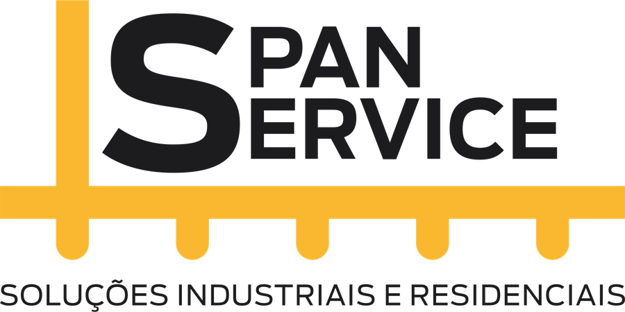

Três propostas para a nova página inicial da Span Service, com o logo, as fotos e os textos do site atual. Abra cada uma (funcionam no celular também) e escolha a preferida. Dá para misturar pontos de duas. Depois da escolha, o site ganha as páginas internas: uma por serviço, A empresa, Projetos e Contato.